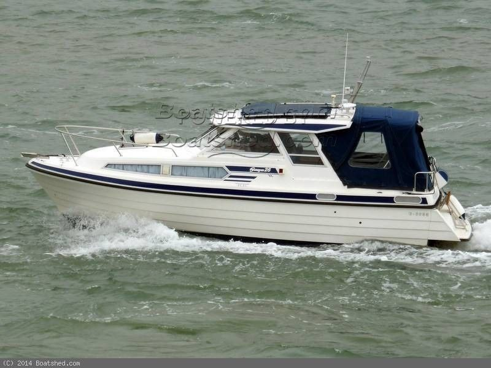

B-Scout Boat Guide · SAGA-26-HT
Saga 26 HT Hardtop Cruiser
1992–2007
The Saga 26 HT is a Norwegian hardtop motor cruiser, not a double-ender aft-cabin boat. Period references describe both semi-planing and planing versions with single inboard diesel power, emphasizing compact all-weather family cruising.

- Length
- 26.25 ft
- Beam
- 9.02 ft
- Draft
- 2.62 ft
- Hull behaviour
- Displacement
- Fuel
- Diesel
- Propulsion
- Unknown
- Engine configuration
- Single diesel inboard; semi-planing and planing versions documented
- Boat family
- Hardtop Cruiser
- Construction
- Fiberglass
Best for
- Couples seeking a compact Scandinavian hardtop cruiser
- Inland and sheltered/coastal cruising
- Owners wanting simple single-diesel operation
Trade-offs
- Different propulsion/hull versions require individual verification
- Interior and tankage data are less consistently documented than newer Saga models
- Older examples may have significant owner modifications
Known concerns
- No model-specific concern has been promoted to B-Scout’s evidence threshold. This does not mean the model has no age-, condition- or hull-specific risks.
Inspection focus
- Confirm whether the boat is semi-planing or full-planing version
- Verify shaft or sterndrive arrangement and engine installation
- Inspect hardtop windows, deck fittings and cockpit enclosure
- Inspect cooling, exhaust, fuel and steering systems
- Verify tankage, berths and sanitation equipment on the individual boat
Continue researching
Related boat models
Beneteau Barracuda 8 Sport-Fishing Pilothouse
26.21 ft · Planing
Nordic Tugs 26
26.33 ft · Semi-Displacement
Beneteau Antares 8 Cruising / Fishing
26.42 ft · Planing
Atlantic Boat 26 Downeast / Lobsterboat Hull
26 ft · Semi-Displacement
Back Cove 26 Downeast Cruiser
26.5 ft · Semi-Displacement
C-Dory 26 Pro Angler Walkaround Fishing
26 ft · Planing
About this record
B-Scout preserves uncertainty: missing information remains unknown rather than being treated as a negative. Specifications and guidance describe the model record; individual boats can differ by year, equipment, refit and condition.